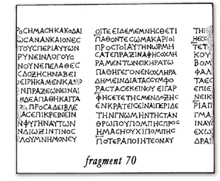

Contents:
Notes:
Purple text indicates that the words translated are wholly or largely
restored.
Ellipses (...) of various lengths indicate gaps of various lengths in the text.
Physics
Fr. 1
Diogenes of Oinoanda's epitome on sensation
and nature.
Fr. 2
...observing that most people suffer from false
notions about things and do not listen to the body when it brings important and just
accusations against the soul, alleging that it is
unwarrantably mauled and maltreated by the soul and dragged to things which are not
necessary (in fact, the wants of the body are small and easy to obtain — and the
soul too can live well by sharing in their enjoyment — while those of the soul are both great and difficult to obtain and,
besides being of no benefit to our nature, actually involve dangers). So (to
reiterate what I was saying) observing that these people are in this predicament, I bewailed their behaviour and wept over
the wasting of their lives, and I considered it the responsibility of a good man to give
benevolent assistance, to the utmost of
one's ability, to those of them who are well-constituted. This
is the first reason for the inscription.
I declare that the vain
fear of death and that of the gods grip
many of us, and that joy of
real value is generated not by theatres and ...and
baths and perfumes and ointments, which
we have left to the masses, but by natural
science...
Fr. 3
And I wanted to refute those who accuse natural
science of being unable to be of any benefit to us. In this way,
citizens, even though I am not engaging in public
affairs, I say these things through the inscription just as if I were taking
action, and in an endeavour to prove that what benefits our nature, namely freedom from
disturbance, is identical for one and all.
And so, having described the second reason for the
inscription, I now go on to mention my mission and to explain its character and nature.
Having already reached the sunset of my life (being almost on the verge of departure from the world on account of old age), I wanted, before being overtaken by
death, to compose a fine anthem to celebrate
the fullness of pleasure and so to help now those who are
well-constituted. Now, if only one person or two or three or four or five or six or any larger number you choose, sir, provided that it is not very large, were in a bad
predicament, I should address them individually and do all in my power to give them the best advice. But, as I have said before, the majority of people suffer from a
common disease, as in a plague, with their false notions about things, and their number is increasing (for in mutual emulation they catch the disease from one another, like
sheep) moreover, it is right to help also generations to come (for they too belong to us, though they are still
unborn) and, besides, love of humanity prompts us to aid also the foreigners who
come here. Now, since the remedies of the inscription reach a larger number of people, I wished to use this stoa to advertise publicly the
medicines that bring salvation. These medicines we have put
fully to the test; for we have dispelled the fears
that grip us without justification, and, as for pains, those that
are groundless we have completely excised, while those that are natural we have reduced to an absolute
minimum, making their magnitude minute.
Fr. 4
... us ... the first ...
... as is supposed by some of the philosophers and especially the
Socratics. They say that pursuing natural science and busying oneself with
investigation of celestial phenomena is superfluous
and
unprofitable, and they do not even deign to concern themselves with such
matters.
Fr. 5
Others do not explicitly stigmatise natural science
as unnecessary, being ashamed to acknowledge this,
but use another means of discarding it. For, when they assert that things are
inapprehensible, what else are they saying than that there is no need for us to pursue natural
science? After all, who will choose to seek what he can never find?
Now Aristotle and those who hold the same Peripatetic
views as Aristotle say that nothing is scientifically knowable, because things are continually in flux and, on account of the rapidity of the flux, evade our
apprehension. We on the other hand acknowledge their flux, but not its being so rapid that the
nature of each thing is at no time apprehensible by sense- perception. And indeed
in no way would the upholders of the view under discussion have been able
to say (and this is just what they do maintain
that at one time this is white and
this black, while at another time neither this is
white nor that black, if
they had not had previous knowledge of the nature of both white and
black.
And the so-called ephectic philosophers, of whom Lacydes
of Cyrene...
Fr. 6
As for the first bodies, also
called elements, which on the one hand have subsisted from the beginning
and are indestructible, and on the other
hand generate things, we shall explain what they
are after we have demolished the theories of
others.
Well, Heraclitus of Ephesus identified fire as elemental,
Thales of Miletus water, Diogenes of Apollonia and Anaximenes air, Empedocles of
Acragas fire and air and water and earth, Anaxagoras of Clazomenae the
homoeomeries of each thing, and the Stoics matter and God. As for Democritus of
Abdera, he did well to identify atoms as elemental, but since his conception of them was in some respects mistaken,
he will be considered in the exposition of our theories.
Now we shall bring charges against the said men, not out of contentiousness towards them, but because we
wish the truth to be safeguarded; and we shall deal with Heraclitus first, since he has been placed first on
our list.
You are mistaken, Heraclitus, in saying that fire is elemental, for neither is it indestructible, since we observe it
being destroyed, nor can it generate things...
Fr. 7
........................ this .......... is nothing
....... void ....... to be acted upon, .... to be acted upon .... infinity .... nothing
..... cannot ... the last, because he (?) knows it.
Even Democritus erred in a manner unworthy of himself when he said that
atoms alone among existing things have true reality, while everything else exists by
convention. For, according to your account, Democritus, it will be impossible for us even to
live, let alone discover the truth, since we shall be unable to protect ourselves
from either fire or slaughter or any other force.
Fr. 8
Since the first bodies cannot be broken
up by anyone, whether he is god or man, one is left to conclude that
these things are absolutely indestructible,
beyond the reach of necessity. For if they were
destroyed, in accordance with necessity, into the nonexistent, all things would have
perished.
Fr. 9
And often mirrors too will be my witnesses
that likenesses and appearances are real entities.
For what I say will certainly not be denied at all by the image which will give supporting evidence on
oath in mirrors. We should not see ourselves in them, nor indeed would
any reflection be created, if
there were not a continual flow being borne from us to the mirrors and bringing
back an
image to us. For this too is convincing proof of the effluence, seeing that each of the parts is carried to the point straight ahead.
Now the images that flow from objects, by impinging on our eyes, cause us both to see external realities
and, through entering our soul, to think of them.
So it is through impingements that the soul receives in turn the things seen by the eyes; and after the
impingements of the first images, our nature is rendered porous in such a manner that, even if the objects which it first saw are
no longer present, images similar to the first ones are received by the mind,
creating visions both when we are awake and in sleep.
And let us not be surprised that this happens even
when we are asleep; for images flow to us in the same way at that time too.
How so? When we are asleep, with all the senses as if it were paralysed and
extinguished again in sleep, the soul, which is
still wide awake and yet is
unable to
recognise the predicament and condition of the senses at that time, on receiving the images that approach
it, conceives an
untested and false opinion concerning them, as if it were actually apprehending the solid nature
of true realities; for the means of testing the opinion are asleep at that time. These are the senses; for the rule
and standard of truth with respect to our
dreams remain these.
In opposition to your argument,
Democritus, we now say this: the nature of dreams is
in no way god-sent, as you maintain, or monitory, but rather dreams are
produced, I say, by certain natural entities,
with the result that the fallacious argument is turned aside, for,
as I have shown, the same images which cause vision cause dreams as well
as thought.
Fr. 10
... asleep ... So visions
are not empty illusions of the mind, as the Stoics hold. For
indeed, if on the one hand they call them empty on the ground that,
while they have a corporeal nature, it is exceedingly subtle and does
not impinge on the senses, they have expressed themselves wrongly, since
it was necessary to call them corporeal, despite their
subtlety. If on the other hand they call them empty on the ground
that they have no corporeal nature at all -- and it is in fact this
rather than the former which they mean --, how can the empty be
represented?
What then are they? Visions in fact have a
composition which is subtle and eludes our sight, but
which is not empty. For the mind, being superior in subtlety,
.... provides ... the starting-point and ... things ... and moves
........... imagining that we shall be struck with a sword or shall fall
from a precipice, we spring up in consequence of our fear, even when we
are in company. To these examples I add this
further one: since in our dreams, as also when we are awake, we
perform sexual acts, it is no good arguing that the pleasure we derive
from them is unreal because we are asleep. So one must not call
these visions empty, since they actually possess such great power.
On the other hand, however, if they are not empty , that
does not mean that they are sentient and rational and really chat to us,
as Democritus supposes; for films which are so subtle and lack the depth
of a solid constitution cannot possibly possess these faculties.
So these theorists, the Stoics and Democritus, went
astray in opposite directions: the Stoics deprive visions of a power
which they do have, while Democritus endows them with a power which
they do not have. In fact the nature of dreams...
Fr. 12
The caves which they frequented
with the advance of time, as they sought shelter from wintry
storms, gave them the conception of houses, while the wraps which they
made for their bodies, as they protected them either with foliage or
with plants or even (for they were already killing animals) with skins,
gave them the notion of clothes -- not yet plaited, but perhaps made by
felting
or some such process. Then the advance of time inspired them or
their descendants with the idea of the loom as well.
So no arts, any more than
these, should be explained by the introduction of Athena or any other
deity; for all were the offspring of needs and experiences in conjunction
with time.
And with regard to vocal sounds -- I mean the words and
phrases, of which the earth-born human beings produced the first
utterances --, let us not introduce Hermes as teacher, as some claim he
was (for this is palpable drivel), nor let us credit those philosophers
who say that it was by deliberate invention and teaching that names were
assigned to things in order that human beings might have distinctive
designations for them to facilitate
their communication with one another. It is absurd, indeed more
absurd than any absurdity, as well as quite impossible, that any one individual
should have assembled such vast multitudes (at that time there were as
yet no kings, and indeed, in the absence of any vocal sounds, no
writing; and with regard to these multitudes it
would have been quite impossible, except by means of decree, for
their assembly to have taken place) and, having assembled them, should have
taken hold of a rod (?) and proceeded to teach them like an elementary
schoolmaster, touching each object and saying "let this be called
'stone,' this 'wood,' this 'human being' or 'dog' or
'ox' or 'ass' ..."
Fr. 13
The heavenly bodies, when the whirls of
air cause such strong movement, are all
violently tossed about, but some meet one another, while others do not; and
some pursue a straight course up to a certain point, others, like the sun and moon, an oblique one, while others revolve in the same
place, like
the Bear; moreover, some move in a high orbit, others however in a low
one. Yes, and this is a fact of which most people are ignorant: they suppose
the sun at any rate to be as low as it appears to be, whereas it is not as low; for if it
were so, the earth and everything on it would necessarily be set ablaze. So it is its image which we see
low, not the sun itself. However, this is to digress.
Let us now discuss risings and settings and related
matters after making this preliminary point: if one is investigating things that are not directly perceptible, and if one sees that several explanations are possible, it is
reckless to make a dogmatic pronouncement concerning any single one; such a procedure is characteristic of
a seer rather than a wise man. It is correct, however, to say that, while all explanations are possible, this one
is more plausible than that.
It is therefore possible that the sun is a disc resembling
red-hot charcoal
and of an extremely fine texture, lifted up by
the winds and functioning like a
spring, in that some fire flows away from it, while other fire
flows into it from the surroundings, on account of their
multifarious mixture, in aggregations of small
parts. Thus it is of itself naturally
sufficient for the world ...
Fr. 14
Hail, not unreasonably, is produced by a fine, loose
conglomeration, which is due to the self-moving
energy of what surrounds it and is formed
either by a wind that is cold but high in the air
or by filmy snow.
Fr. 15
... all men hoped ................ at a loss. For
if they experience distinct visions, and are unable to discover how
these are produced, understandably, I think, they are involved in
apprehension; and sometimes they are even
convinced that there is a creator ...
Fr. 16
..... and they vehemently denounce
the most pious people as atheistic.
And in fact it will become evident that it is not we who
deny the gods, but others.
Thus Diagoras of Melos, with
certain others who closely followed his theory, categorically
asserted that gods do not exist and vigorously
attacked all those who thought otherwise.
Protagoras of Abdera in effect put forward the same view
as Diagoras, but expressed it differently to avoid its excessive
audacity. For he said that he did not know whether gods exist,
which is the same as saying that he knew that they do not exist.
If indeed he had balanced the first statement with "However, I do
not know that they do not exist," perhaps
he would almost have a circumlocution
to avoid the appearance of denying
the gods completely. But he said
"I do not know that they exist," and not
"I do not know that they do not exist," doing exactly
the same as Diagoras, who indefatigably did not
stop saying that he did not know
that they exist. Therefore, as I say,
either Protagoras in that case in effect
put forward the same view as Diagoras or ..
Fr. 17
..................................... in
a chariot, making Triptolemus mount one and providing him with
most wretched toils .....................................................
For indeed, while honouring supreme Zeus and Demeter as deities, we
regard human beings not as their
slaves, but as their friends.
Fr. 18
................ that we may not suppose, having shared in
judging what is still the subject of dispute, ...
................ Let us not think
that the gods are capable of examining people who are unjust and
base and noble and just. Otherwise
the greatest disturbances will be created in
our souls.
Fr. 19
Let us then contradict Homer, who talks
all sorts of nonsense about them, representing them sometimes
as adulterers, sometimes as lame, sometimes as
thievish, or even as being struck by mortals with a spear, as well as
inducing the craftsmen to produce inappropriate portrayals. Some statues of gods shoot
arrows and are produced holding a bow, represented
like Heracles in Homer; others are attended by a
body-guard of wild beasts; others are angry with the prosperous, like Nemesis according to popular opinion;
whereas we ought to make statues of the gods genial and smiling, so that we
may smile back at them rather than be afraid of them.
Well, then, you people, let us reverence the gods rightly
both at festivals and on unhallowed occasions,
both publicly and privately, and let
us
observe the customs of our fathers in relation to
them and let not the imperishable beings be falsely accused at all by us
in our vain fear that they are responsible for all
misfortunes, bringing sufferings to us and
contriving burdensome obligations for themselves.
And let us also call upon them by
name ...
Fr. 20
It is impossible, to begin with, that he should have need
of a city and fellow-citizens, as well as being quite absurd that he, as a god, should seek to have men as
fellow-citizens. And there is this further point too: if he had created the world as a habitation
and city for himself, I seek to know where he was living before the world
was created; I do not find an answer, at any rate not one consistent with the doctrine of these
people when they declare that this world is unique. So for that infinite time,
apparently, the god of these people was cityless and homeless and, like an unfortunate man —
I do not say "god" —, having neither city nor fellow-citizens,
he was destitute and roaming about at random. If therefore the divine
nature shall be deemed to have created things for its own sake, all this is
absurd; and if for the sake of men, there are yet other more absurd consequences.
Let its divide the discussion into two -- the world and
men themselves. And first let us speak about the world.
If indeed all things are well arranged for
men and nothing is antagonistic to them, our situation is like that of creatures made by a god. But let it
be agreed first ....
Fr. 21
The sea has excessively large
parts of this earth as its share, making a peninsula of the inhabited
world; it is itself also full of yet other evils and, to cap all, has
water which is not even drinkable, but briny and bitter, as if it had been purposely made like this by the god to prevent men from
drinking.
Moreover, the so-called Dead Sea, which is really and truly
dead (for it is never sailed), even deprives the local inhabitants of part of the land which they occupy; for it drives
them away to a very considerable distance with its impetuous attacks and again floods their
land as it withdraws, as though being on its guard lest they may do any cleaving of the earth with a plough.
Such then are the things of the world. But the
things of men themselves -- let us now see if they are well arranged by
divine providence. Let us begin like this: fine indeed, my
friends, is this creature man -- a creature
that is rational, gifted with prescience of
the future, and capable of leading a
blissful life -- if he possesses virtue for
its own sake and good dispositions. But this
creature does not possess wisdom or indeed virtue,
according to the Stoics who hold that view;
for the great folly of all men prevents
them. And ... not ...
Fr. 22
... prostrate ourselves before your
images. By making men tyrants you permit outrages. Let us also
refer to soldiers who have inflicted numerous hardships on the
whole world. And let us remember certain
tribes and ..... in our ...
Who then, father Zeus, if he hears
any talk of gods who allow such great evils to afflict
mankind ... ?
Fr. 23
Enough of this subject, since it is
not necessary to say anything in reference to
(?) the trap posed by meanings that remain concealed
(?), unless you think that we do not
appreciate what great misfortunes some people have experienced on account
of this ambiguity and intricate obliqueness of oracles, or that this is
the right time for us to give a thorough explanation of the kind of disaster
which the Spartans suffered after they had consulted
the Delphic oracle concerning Arcadia.
Fr. 24
In this case a natural philosopher used
arguments of a dialectician, attempting the art of divination concerning
dreams and wholly trusting them. For
................... Antiphon, he says, predicted, when he was consulted by a
runner, who was just about to compete for a prize at Olympia, that
he would be beaten. For the runner, he says, said, when consulting
Antiphon, that he thought that an eagle was giving chase in his dreams.
And Antiphon at once told him to remember that an eagle always drives
other birds before it and is itself last. However, he says that
another interpreter declared, when he was consulted, that the god did not say
at all to the runner "you will be beaten," and that the eagle is no cause
for anxiety. If, thanks to Antiphon, he (the runner) had not shown him (the interpreter)
up, so that he was able to see that the dream could
be interpreted in entirely different ways, he would not have suspected
that he was receiving unreliable advice. ... For ... thing
... as dreams testify ...
Fr. 25
To the happy man, the unhappy man
always seems more turbulent than him, since he is full of disturbance
and confusion.
Ethics
Fr. 28
Diogenes of Oinoanda’s epitome on
emotions and actions.
Fr. 29
There are many who pursue philosophy for the sake of
wealth and fame, with the aim of procuring these
either from private individuals or from kings, by whom philosophy is deemed to
be some great and precious possession.
Well, it is not in order to gain any of the above-mentioned objectives that
we have embarked upon the same undertaking, but so that we may enjoy happiness through
attainment of the goal craved by nature.
The identity of this goal and how neither wealth can
furnish it, nor political fame, nor royal office, nor a life of luxury
and
sumptuous banquets, nor pleasures of choice love-affairs, nor anything else, while philosophy
alone can secure it, we
shall now explain after setting the whole question before you. For we have had this
writing inscribed in public not for ourselves, but for you, citizens, so that we might render it available
to all of you in an easily accessible form without oral instruction.
And ... you ...
Fr. 30
... time ... and we contrived this in order that, even while
sitting at home, we might be able to
exhibit the goods of philosophy, not to all people here indeed,
but to those of them who are civil-spoken; and not least we did this
for those who are called "foreigners," though they are not really so.
For, while the various segments of the earth give different people a different country, the whole compass of this world gives all
people a single country, the entire earth, and a single home, the world.
I am not pressurising any of you into testifying thoughtlessly and unreflectively in favour of those who say
"this is true" for I
have not laid down the law on
anything, not even on matters concerning the
gods, unless together with reasoning.
One thing only I ask of
you, as I did also just now: do not, even if
you should be somewhat indifferent and listless,
be like passers-by in your
approach to the writings, consulting each
of them in a patchy fashion and omitting to read everything
..
Fr. 31
Let us, then, immediately begin by
discussing pleasures, and moreover by
carefully examining the arguments in detail ...
Fr. 32
... the latter being as malicious as the
former.
I shall discuss folly shortly, the virtues and pleasure now.
If, gentlemen, the point at issue between these people and us involved inquiry into
"what is the means of happiness?" and they wanted to say
"the virtues" (which would actually be true), it would be unnecessary to
take any other step than to agree with them about this, without more
ado. But since, as I say, the issue is not "what is the means of
happiness?" but "what is happiness and what is the ultimate goal of our
nature?", I say both now and always, shouting out loudly to all Greeks and non-Greeks, that
pleasure is the end of the best mode of life, while the virtues, which
are inopportunely messed about by these people (being transferred from
the place of the means to that of the end), are in no way an end, but
the means to the end.
Let us therefore now state that this is true, making it our starting-point.
Suppose, then, someone were to ask someone, though it is a
naive question, "who is it whom these virtues benefit?", obviously the answer will
be "man." The virtues certainly do not make provision for these birds
flying past, enabling them to fly well, or for each of the other
animals: they do not desert the nature with which they live and by which they
have been engendered; rather it is for the sake of this nature that the
virtues do everything and exist.
Each (virtue?) therefore ............... means of (?)
... just as if a mother for whatever reasons sees that the possessing nature has
been summoned there, it then being necessary to allow the court to asked
what each (virtue?) is doing and for whom
.................................... We must show both
which of the desires are natural and which are not; and in general all things that
are included in the former category are easily attained .....
Fr.33
... such virtues ... pleasure ... and of
virtues ... feels much pain ... the
evil is ... from
all virtues ... apart from tension ... pleasure, but these quibblers
admit ... often found not ..., and
Zeno himself proposes the opinion
..........., just as if he means virtue when he has said
"pleasure," and that men run to them. And again
elsewhere having forgotten this hunger (for they
did not say that ........) ... of
this ... so that ... it ... in no way .... Since these people lay it
down like a trap for all men, it is able to
ensnare us(?), just like birds themselves, and to drag
us far off even though we have proved fit for the names of the
virtues, sometimes ...., at other times
........................................................ submitting to
.......
I want now to get rid of
the error, prevalent among you along with others,
concerning the same emotion, and especially to
speak against one doctrine of yours, Stoics.
My argument is as follows: not all causes
in things precede their effects, even if the majority do, but some of
them precede their effects, others coincide with them,
and others follow them.
Examples of causes that precede are cautery and surgery
saving life: in these cases extreme pain must be borne, and it is after
this that pleasure quickly follows.
Examples of coincident causes are solid
and liquid nourishment and, in addition to these, sexual
acts: we do not eat food and
experience pleasure afterwards, nor do we drink wine
and experience pleasure afterwards, nor do we emit semen and experience
pleasure afterwards; rather the action brings about these pleasures for us immediately,
without awaiting the future.
As for causes that follow, an
example is expecting to win praise after death: although men
experience pleasure now because there will be a favourable memory of
them after they have gone, nevertheless the cause of the pleasure occurs
later.
Now you, being unable to mark off these distinctions,
and being unaware that the virtues have a place among the causes that coincide
with their effects (for they are borne along with pleasure),
go completely astray.
Fr. 34
... reasoning ... of happiness
................... is ... hope, after selection
of these, and cure of erring emotions. So where, I say, the
danger is great, so also is the fruit. Here we must turn aside these fallacious
arguments on the grounds that they are insidious and insulting and contrived, by means of
terminological ambiguity, to lead wretched human
beings astray ....................... let
us not avoid every pain that is present, and let
us not choose every pleasure, as the many always do. Each person must employ
reasoning, since he will not always achieve
immediate success: just as exertion (?) often
involves one gain at the beginning and
certain others as time passes by, so it is
also with experiencing pleasure; for sowings of seeds do
not bring the same
benefit to the sower but we see some seeds very quickly germinating
and bearing fruit and others taking longer
............... of pleasures and pains
........ pleasure.
And so the .......... are ....... If
.................. prudence.
Let us now investigate how life is to
be made pleasant for us both in states and in actions.
Let us first discuss states, keeping an eye on the point
that, when the emotions which disturb the soul are removed, those which
produce pleasure enter into it to take their place.
Well, what are the disturbing emotions? They
are fears -- of the gods, of death, and of pains
-- and, besides these, desires that outrun
the limits fixed by nature. These are the roots of all evils, and,
unless we cut them off, a
multitude of evils will grow upon
us.
Well, let us examine our fear of the gods ...
Fr. 35
As a matter of fact this fear is sometimes clear,
sometimes not clear -- clear when we avoid something manifestly harmful
like fire through fear that we shall meet death by it, not clear when,
while the mind is occupied with something else, it (fear) has insinuated
itself into our nature and lurks ...
Fr. 37
The soul furnishes nature with the
ultimate cause both of life and of
death. It is true that the number of its constituent atoms, both its rational and irrational parts being taken into
account, does not equal that of the body; yet it girdles the whole man and,
while being itself confined, binds him in its turn, just as the minutest
quantity of acid juice binds a huge quantity of milk.
And this too is a sign, among many others, of the primacy of this
cause: often, although the body has been beset by a long illness and has come to be so
attenuated and emaciated that the withered skin is all but adhering to
the bones and the constitution of the internal parts appears to be empty and bloodless,
nevertheless, provided that the soul remains, it does not allow the creature to
die. And this is not the only sign of its supremacy, but it is also the case
that amputations of hands and often of whole arms or legs by fire and iron
cannot unfasten life. So powerful is the dominion which the soul-part of
us exercises over it. Contrariwise there are occasions when, although the body is intact and has
suffered no diminution of its bulk the faculty of sensation abandons it; for it is of no avail if the
soul no longer remains and its union with the body is dissolved.
But, as long as we see the same part still remaining as guardian, the
man lives. Thus, as I said, the ultimate cause of
life is the soul being united with or
separated from the body.
Fr. 38
The soul cannot survive separation
from the body, since it is necessary to
understand that it too is a part. By itself the
soul cannot ever either exist (even though Plato
and the Stoics talk a great deal of nonsense on
the subject) or experience movement,
just as the body does
not possess sensation when the soul is
released from it.
Fr. 39
... in perpetual motion ... If ...., why then
............ we say ..... even to be .... this .... from (?) the
........ after the body, .... it ............... is joined with the body,
if ... powerful .... when .......................... How then,
Plato, will imperishability come about
for you? Or how can this in common
language be called (?) imperishable ....................?
The Stoics (wanting to say more singular things than
others on this subject) deny that the souls are absolutely imperishable,
but then say that those of fools are destroyed immediately after the
parting of the body, while those of virtuous men survive, though they
too are destroyed sometime. Well, observe the glaring implausibility
of their view: they make their assertion as though the wise and the
unwise, even if they do differ in intellectual ability, do not have the
same mortality. Actually, I marvel more at
their restraint -- how it is that, once the
soul is to have the power to exist separate from the body,
even if we say for the briefest moment of time, and ...
Fr. 42
Empedocles in regard to these matters
borrowed his philosophy from Pythagoras. .................. going
astray (?) he says that the souls transmigrate from body to body after the first has been destroyed, and that this happens ad infinitum, as
if someone is not going to say to him: "Empedocles, if the souls are able
to survive independently and you have no need (?) to drag them into the nature of
a living creature and to transfer them for this reason, how is the transmigration of use
to you? For in the intervening time, during
which their transmigration is
effected, interrupting the nature of a living creature, they will
be thrown into complete confusion (?). If on the other hand they are in no
way able to survive without a body,
why exactly do you give yourself -- or
rather them -- this trouble, dragging them
about and making them transmigrate from one creature
to another? And these
.......................................................................................................
It would be preferable to make the souls
independent and absolutely indestructible and not to cause them to
embark on a long, circuitous voyage, so that eventually your theory,
though still fallacious, would command more respect. Otherwise we
shall disbelieve you, Empedocles, with regard to these
transmigrations."
Fr. 43
Visions are not empty illusions of the
mind, as the Stoics imagine, going completely astray. In fact they also have
the nature of corporeal images and impressions
similar in form to all these visible objects which their flux allows
us to apprehend, as I demonstrated also in
the writing before this one, when I was elucidating the theories about
dreams.
Now these images do not in any way have
any sensation, as Democritus [supposes, seeing
that they are constructed of fine
atoms and are perceptible only by the mind. If
they have the form of such things as are congenial to our nature, they
make the soul exceedingly glad; but if of such things as are repugnant
to our nature, they fill the whole man with a great
perturbation and fear and set his heart
pounding.
Fr. 44
The soul experiences feelings
far greater than the cause which generated them, just as a
fire vast enough to burn down ports and cities is kindled by an
exceedingly small spark. But the pre-eminence of these feelings of the
soul is difficult for ordinary people to gauge: it is impossible
to make a direct comparison by experiencing simultaneously the extremes
of both (I mean of the feelings of the soul and of the body), since this
seldom ever happens and, when it does happen, life is destroyed; and
consequently the criterion for determining the pre-eminence of one of
the two is not found. Instead, when someone encounters bodily
pains, he says that these are greater than those of the soul; and when he
encounters those of the soul, he says that they are
greater than the others. For what is
present is invariably more convincing than
what is absent, and each person is likely either
through necessity or through pleasure, to
confer pre-eminence on the feeling which has hold of him. However,
this matter ,which is difficult for ordinary people to gauge, a wise man
calculates on the basis of many factors including ... (continued
in fr. 45?)
Fr. 45
(continuation of fr. 44?)
... including consideration of the
future, in respect to which they are worse
off, who, when they have been aroused by feelings of the soul
..... struck ....... never .................
they foist their bodily pains upon their
souls ...
Fr. 47
Nor do we consider terrible the
misfortunes which provoke such great pains. For (if it is necessary for
anyone to take illustrations of pain) when someone has been struck by a
thunderbolt, or when a stone four feet across has crushed him with the speed of
thought or when he has been decapitated with a sword with
the swiftness of a dream, how, in the name of
Heracles, is the suffering terrible in such cases,
when death occurs immediately and time does not even allow a cry of
agony but with great vehemence snatches the soul away from pain?
So, I say, critical occurrences and also those not very far below them, neither of which
come to a creature introducing long-term pains in the flesh, are in no way to
be feared by us. For if the pain takes a turn for the worse, it no longer continues severely, but
the crisis comes and passes away in the shortest time; while if it is relieved, it ushers the
creature to health. What then, in the name of the twelve gods, is
terrible about that? Or how can we justly bring a complaint against
nature, if someone who has lived for so many years and so many months
and so many days comes to his last day?
So neither the one eventuality nor
the other is evil, since the crisis does not last for many days, after which
either death will possess someone and
absolute unconsciousness will
at once occur, or he will be quickly
restored to health and life is preserved.
And as for the crises of diseases, which
indeed are themselves bearable in these
circumstances, why is it also necessary to
experience mental pain about them?
Fr. 48
.................. not (?) .........................
Therefore three kinds of pains -- one coming to us from want, another from
sprains and the bones (whether through blows or imperceptibly), another
from diseases -- it is in the power of all to escape, in so far as a man's
nature is able to avoid them. Now want has been discussed above; as
for wounds and suchlike, this much is sufficient. For
some ................, while others ....
Fr. 49
For even if I did nothing to
reveal and point out the nature of
pleasures, still they themselves reveal their
own nature to us.
In this way ....... well ...... no longer. Through
bodily pleasures the soul readily receives
also those that are productive of
this. For our nature
wants what
is better for our soul.
Moreover, the soul is manifestly more powerful
than the body; for it has control of
the extreme and supremacy over the other feelings,
as indeed we revealed it above.
So if, through paying attention
to the arguments of Aristippus, we take care of the body, choosing
all the pleasure derived from drink, food and sexual
acts and indeed absolutely all the things which no longer give
enjoyment after the happening, but neglect the soul, we shall deprive
ourselves of the greatest pleasures.
Fr. 51
Neither political fame nor royal
office nor wealth is productive of pleasure. The philosopher
therefore does not want the
authority and dominion of Alexander or
still more than even he possessed,
since human beings are constituted having
no need of what is vain.
Fr. 53
Why then is the fulfilment of certain
predictions stronger evidence of
the soundness of divination than their non-fulfilment is
evidence of its unsoundness? It is
illogical, in my view. .... I lay
down ...
Fr. 54
.... contradictions (?) .................... is so, as these
people say, and that it is impossible to escape
necessity, ..... the error; while if
....... undecided (?) ............... and .......... for what other argument
will he adopt .......? Evidently
he will not have one.
So, if divination is eliminated, what
other evidence for fate is there?
If anyone adopts Democritus’ theory and asserts that because of their collisions with one
another the atoms have no free movement, and that consequently it appears that all motions are
determined by necessity, we shall say to him: "Do you not
know, whoever you are, that there is actually a free movement in the atoms, which
Democritus failed to discover, but Epicurus brought to light, — a swerving
movement, as he proves from phenomena?" The most important
consideration is this: if fate is believed in, all admonition and
censure are nullified, and not even the wicked can
be justly punished, since they are not responsible for their sins.
Fr. 56
So we shall not achieve wisdom
universally, since not all are capable of it. But if we
assume it to be possible, then truly the life of the gods will pass to
men. For everything will be full of justice and mutual love, and there will
come to be no need of fortifications or laws and all the things which we contrive
on account of one another. As for the necessities derived from
agriculture, since we shall have no slaves at that
time (for indeed we ourselves shall plough
and dig and tend the plants and divert
rivers and watch over the crops), we shall
... such things as ... not ... time ..., and such activities, in
accordance with what is needful, will interrupt the continuity of
the shared study of philosophy; for the
farming operations will provide what our
nature wants.
Letter to Antipater
Fr. 62
From Diogenes.
My Dear Antipater,
Of goodwill you have often
given me indications already, Antipater,
both in the letter which
you sent us recently and
earlier when I was ardently trying
to persuade you in person to turn to
philosophy, in which you, if anyone,
live the most pleasant life through employing
excellent principles.
Accordingly, I assure you, I am most eager to go and meet
again both you yourself and the other friends in Athens and in Chalcis and
Thebes, and I assume that all of you have the same feeling.
These words of this letter I am now writing to you from
Rhodes, where I have recently moved from my own
country at the beginning of winter...
Fr. 63
... our own land being hit by snow.
So, as I was saying, having had my appetite most keenly
whetted by all the advantage of the voyage, I shall try to meet you as
soon as winter had ended, sailing first either to Athens or to Chalcis and
Boeotia.
But, since this is uncertain, both on account of the
changeability and inconstancy of our fortunes and on account of my old age
besides, I am sending you, in accordance with your request, the arguments
concerning an infinite number of worlds. And you have enjoyed good
fortune in the matter; for, before your letter arrived, Theodoridas of
Lindus, a member of our school not unknown to you, who is still a novice
in philosophy, was dealing with the same doctrine. And this doctrine
came to be better articulated as a result of being turned over between the
two of us face to face; for our agreements and disagreements with one
another, and also our questionings, rendered the inquiry into the object
of our search more precise.
I am therefore sending you that dialogue, Antipater, so
that you may be in the same position as if you yourself were present, like
Theodoridas, agreeing about some matters and making further inquires in
cases where you had doubts.
The dialogue began something like this:
"Diogenes," said Theodoridas, "that the doctrine
laid down by Epicurus on an infinite number of worlds is true I
am confident, ................ ................., as if
............. Epicurus .......
Fr. 64
.... the ... of the matter under investigation .... having
assumed all that ...
Fr. 65
I laugh at ... and dismissed the arguments, passed on to
us by you, of those who say that ....... the world is ...... of some
..... ....... concerning this ...... and into ............... argument
..... We therefore, so that you may not make the earth gape open and
fill it and .......
Fr. 66
Let us now ask those who mislead
us for the explanation of their theory. So let us say to
the gentlemen: "What do you mean, gentlemen,
when you think fit to explain the earth in
this way as boundless? Do you limit the earth throughout its
length from above, circumscribing it with a vault of
sky, and from that starting-point do you extend
it indefinitely into the region below, dismissing the unanimous
opinion of all men, both laymen and philosophers, that the heavenly
bodies pursue their courses round the earth both above and below, and withdrawing
the sun sideways outside the cosmos and reintroducing it sideways?
Or are you not saying this, but that a single earth ............. ?
....................... If ....
Fr. 67
................................... so that ....... them
..... Therefore if the indivisible entities are assumed by us to be finite
in number and for the reasons we have stated
are incapable of coming together (for there are no longer other entities
behind them to surround their number and support them from below and bring
them together from the sides), how are they to engender things, when they
are isolated from one another? The consequence is that not even this
world would exist. For if the number of atoms were finite, they
would not be able to come together.
Letter to
Dionysius (and Carus?)
Fr. 68
... including ...,
Dionysius and Carus (?), in a review ....
phenomena ..... summary .........
Fr. 69
The current is gradually dissolved
by the air. As a result of the buffeting, it is depleted;
for on account of the great extent of space it cannot preserve the order
and position of the atoms. Now, the easily dispersed
currents of
the atoms, although being carried away in filmy form,
nevertheless
themselves both have reality and are constructed
of matter by nature,
just as these atoms are composed by nature.
Since he is awaiting square
impressions, a man falsely accuses the eyes
when they convey in non-square form impressions which in reality are
borne to us through the air in a roundish
form. For in that case
he does not know, presumably, that the
images emanating from the tower are
abraded by the air, but afterwards he sees
well that it is not the eyes which are at fault,
but the mind...
Fr. 70
In these matters pay attention to
us; otherwise it is unhappily necessary to have a prolonged discussion
about them.
So, if you had forgotten
the doctrine, which we have expounded to Avitianus(?),
that the standard of our actions are the feelings of both
pleasure and pain, by reference to which we
must determine both the avoidance of them and
the pursuit of something else, do call it to mind.
But if you remember it, what got into you, my good friends,
that you embarked on an action such as this, which has given rise to
feelings painful to Niceratus and painful to us on account of his misfortunes?
For if you claim that you have a firm grasp of the doctrine, but that
with regard to the decision of sending the man to us or not sending him
-- whether you had to do it in
those circumstances or you were mistaken --, ................... we
................... you were mistaken ............. the utmost
.... Niceratus.
The difficulty to do with this matter
has been thoroughly examined so that afterwards
all of us may be able to know what we must do ...
Fr. 71
Chance can befall us
and do harm, but rarely; for it does not have fuel, like fire, which it
may lay hold of. So Epicurus, having regard to these matters,
refused to remove chance from things entirely (for it would have been
rash and incompatible with philosophical respectability to give a false
account of a matter so clear and patently obvious to all), but not a few
occurrences he called only small. As
then the disposition of the wise man
can represent the accidental happening in
this way, so, it seems, it seldom operates
dominantly, as the son of Neocles says: "It is seldom that chance
impedes the wise man: it is reason which controls and
controlled the greatest and most
important matters." .......... most of all .........
Fr. 72 {The survivor is presumed to be Epicurus,
on his way to Lampsacus from Mytilene}
... bore ... those on
rocks ... the others ...... cold
...................................................... At last he found
a place of refuge on the rocks, from which the sea was no longer
able to suck him down and shatter him again. So he was crushed, as
one would expect, and swallowed down <sea-water>; he was lacerated
through having fallen upon sea-gnawed rocks. Still, he began to
revive and little by little .......... During the time when, after
a long while, the attacks of the waves were intermittent, he
barely came safely to dry land, flayed literally all over. So he
lay on the extremity of the lookout-point, where
he spent the day in this state and
the following night and again the day until evening, spent by hunger and
his wounds.
We know now that the
accidental is doing well what is reckoned appropriate
for you. For your herald who brought you
complete salvation is not dead; for
next ..... chance ....
Fr. 73
I follow you when you make these
statements about death, and you have persuaded me to laugh at it.
For I have no fear on account of the Tityuses and Tantaluses whom some
describe in Hades, nor do I shudder when I reflect
upon the decomposition of the body, being convinced
that we have no feeling, once the soul is
without sensation, or anything else.
Therefore in this matter I
must say now: "I shall be deprived of life and I shall leave
behind the pleasures that belong to it. -- pleasures for which however
after death no one yearns." For in this
case neither a strong hope nor longing possesses him, because he left
behind all objects which too will manifestly decompose. For indeed
to the dead, death is nothing...
Fr. 74
... causes distress (?), in the name of Athena?
And surely it is characteristic of the good man to converse with himself
and to say this: "I am a human being and it is possible that I was affected
in some way (?), since indeed of the flesh
is such and such and such a thing and many other things, of which none
cannot occur." So on every occasion he is able to keep in
mind those of the affections that are natural , because they are easily
defined and marked out as with compasses.

|


{kind=link}